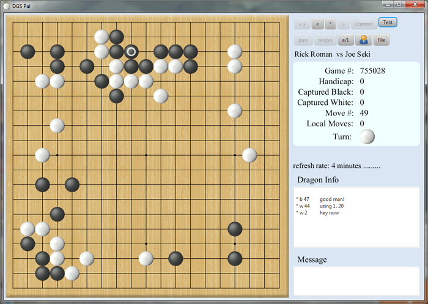

DGS Pal
DGS Pal is a Java Application client for The Dragon Go Server.

The program was written to play Go on-line the way I want to play. I've been using the DGS web client for many years and it was deficient,
from my perspective, in a several ways.
- I only play one game at a time and I want that game to stay on my screen and not go away when I make a move.
- I want moves from my opponent to arrive on my board spontaneously with audible notification.
- I want to be able to play ahead to test out sequences in advance of commiting to a move.
- I want to be able to play ahead even when it is not my move.
Due partially to limitations of the API provided by the creator of Dragon Go Server and partially that I have not implemented
all the feature possible, DGS Pal cannot do everything. You must start games using the DGS web client. You must also score them using
the web client.
System Requirements
DGS Pal requires Java 7, update 13 or later
Download the DGS Pal JAR file here: Be sure to check back periodically for newer versions.
New Version (2/2/13) DGS Pal JAR file here: DgsPal_1.33.jar
Using DGS Pal
- To avoid confusion initially, make sure you have one and only one game in progress on DGS.
- Run the program by double clicking the JAR file. Resolve any run time issues. You may wish to put this in a .bat file for ease of access.
- Click on the User Icon and enter your DGS username and password. This is a one time operation. Close and restart the application.
- You should now see your game. You may play ahead if it is your turn or not your turn. You may only commit a move if it is your turn.
- If you have played ahead and you press commit, your first move will be played and the board will revert to actual positions.
- The * button always returns you to actual positions.
- You may rewind and forward through already played moves with the < and > buttons.
- After you make your move, DGS Pal querys the DGS server at 1 minute intervals, then 2 minutes, then 4 minutes. Pressing the * button will requery DGS
immediately, unless it is too soon and be in violation of DGS excessive usage policies.
If you have any comments or questions: rick@romangoshoes.com
If you would like to support and encourage future enhancements, select the donate button below.